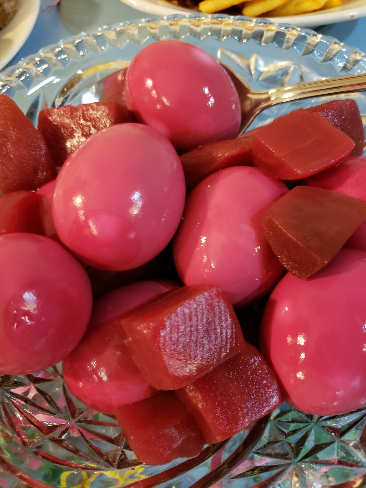

Pickled Beets (and Pickled Eggs)

Description
This is a pickled beet recipe passed onto me from my grandmother/mother again that used to pickle them in the summer and "can" dozens of glass jars of them for year round consumption. I was a picky eater growing up, but for some reason I'd eat beets with evertything. Pro move is to pair them with this sharp cheddar mac and cheese recipe. It's only weird until you you do it.
You may add hard-boiled eggs to the mixture after refrigeration if that's your style. I recommended letting them soak/rest for at least a week before consumption to become fully pickled. These are generally a special Easter treat.
This is a simple one-one-one recipe, so scale it how you like. Larger if you want to make two dozen pickled eggs or want to feed your extended family. This can be ready to eat immediately and no aging necessary.
Ingredients
- 2-3 Bunches of Raw Red Beets or 3-4 Cans Pre-sliced/Cooked Beets
- 3 Cups Apple Cider Vinegar
- 3 Cups Sugar
- 3 Cups Water
- Bonus Ingredient: 10 Eggs
Steps
Skip to Step 4 if purchased pre-cooked beets
- Rinse and dry beets; trimming, and discarding all greens.
- Bring a large pot of salted water to boil. Add the beets and cook until tender (easily stabbed with fork).
- Once tender, remove beets from water and let cool. Be sure to save 3 Cups of this boiled beet water for slightly more beet flavor.
- While the beets cool, add the apple cider vinegar to the beet water and bring to a boil.
- Once water and vinegar come to a rolling boil, slowly add the sugar, stirring constantly. (I know, this is a lot of sugar, I usually cut it back to around 2 Cups).
- Once the beets are cool enough to handle, the skins should slide right off. Remove the skins and chop the beets into slices or whatever shape you wish.
- Add the beet pieces to the water/vinegar/sugar mixture and boil for approximately 15-20 minutes for immediate consumption.
- If preparing for a later date, you may just add the beets and place the entire batch in a sealed container for refrigeration.
ENJOY!